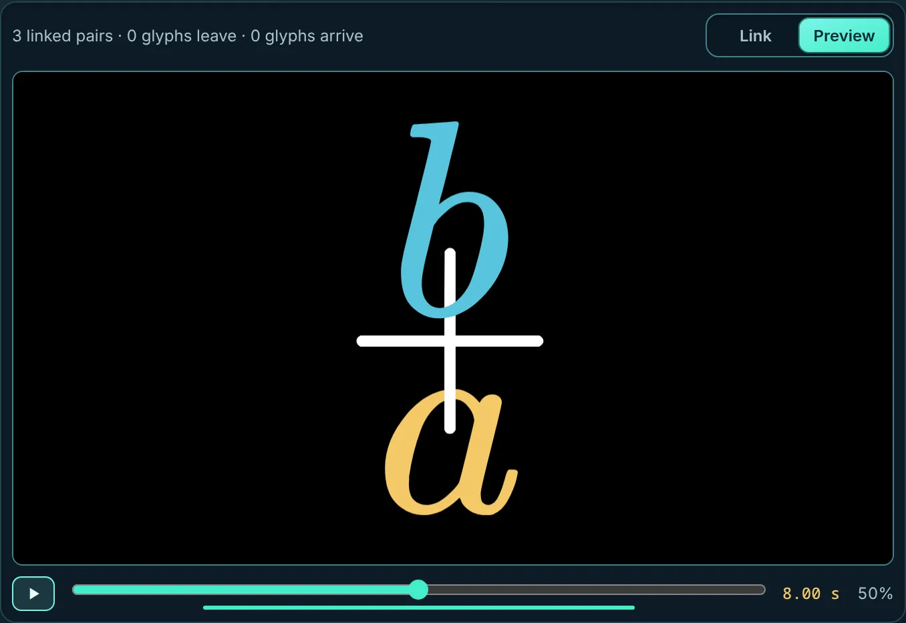
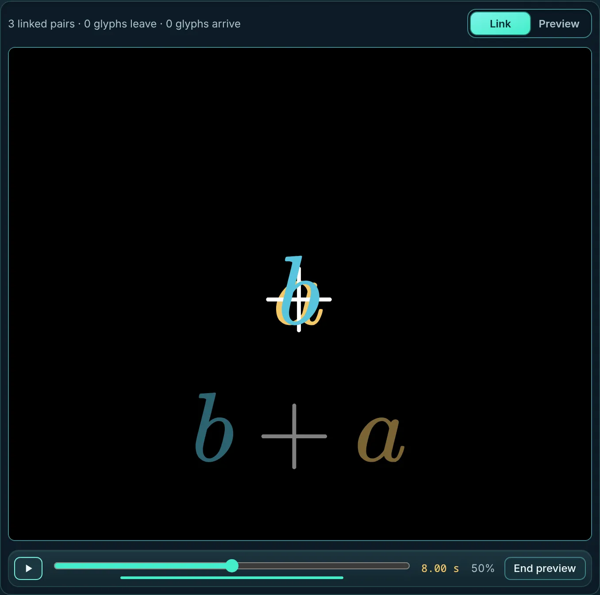

Previewing a transformation
You do not have to save a relation to see what it does. The relation editor can play the transformation as it is now, in two ways: Preview shows it as the scene will, and Preview raw animates the drawing itself, so that you can check the pairs.
Why preview in the editor
Without a preview you would save the relation, close the editor and play the timeline to see a pair you got wrong, then open the editor again. The previews of the editor play the draft: the pairs, the styles, the window and what the unpaired glyphs do, as they would be saved now. Nothing is saved for them, and the side column stays beside them, so that a change shows at once.
Both use the scene engine of the main Preview, and the export agrees with it. What loops in the editor is what the scene will show.
The Preview tab
Over the drawing that links glyphs there is a switch, Link | Preview. Press Preview and the transformation takes the place of the drawing.
The picture shows only the two formulas of the relation, as the scene draws them, in a loop. The loop starts half a second before the window and ends half a second after it, so that you see the source standing and the target settled. It does not reach before the first of the two clips starts, nor after the last one ends.
- The play button pauses the loop and plays it again from where it stopped.
- The bar chooses the instant. The band under it marks the window of the transformation.
- The time is in seconds of the scene, and the percentage says how far through the transformation that instant is: 0% before the window, 100% after it.
The camera frames the formulas for the whole loop, so a glyph that follows a wide arc stays in the picture. A clip on a hidden track is drawn too: hiding a track is a choice of the preview, and the export draws it.
Switch to Link to add a pair, and back to Preview: the picture is at the instant you left it, and the new pair already moves.
Choosing the instant
Press the bar, or drag its thumb, and the loop stops where you put it. The picture follows the thumb in both directions, so you can go back and forth through the transformation as slowly as you like. Press play to let the loop go on from there.
Changing things while you look
The side column works while the preview plays. Change the style of a pair, the window, the easing, the path arc or what the unpaired glyphs do, and the picture shows it at once. This is the quickest way to choose a style: try each on the instant that matters.
When there is nothing to show
If the draft has an error, the editor does not draw it: the picture is replaced by Fix the problems listed to see the transformation. Fix the problems under the side column and the preview comes back. If a formula has no glyphs to show, the editor says why: it is empty, it does not render (with the reason), it draws no glyphs, or its glyphs are still rendering.
Preview raw
The last key of the toolbar of the Link view is Preview raw. It animates the drawing itself: the source and the target stay where the drawing has them, one over the other or side by side, and the glyphs go from one to the other as the pairs and their styles say. It is the quickest check that the right glyph goes to the right place.
Four things set it apart from Preview.
- The glyphs go in straight lines. The path arc and the paths drawn by hand belong to the scene, and show in Preview.
- The target is there all along, as a ghost at half its opacity: you see where every glyph is going to land.
- A glyph that is not on screen while the transformation runs is outlined, dashed. A glyph hidden at the start of its clip, or written by a block after the transformation, is not there to move, and the dashed outline shows where it is.
- The two clips are bare. Each is at its formula’s own size, upright and attached to nothing, and keeps only its Appear and Disappear blocks; the other relations of the two clips are left out. So a source that starts empty, or that leaves glyphs out of its intro, is whole here: in the scene, what fills it may be one of those relations.
The pairs are the scene’s. A style, a copy, a fade and what the unpaired glyphs do are what the scene would do, so a Copy pair leaves its source where it is, and the glyphs of the source that belong to no pair leave with the outro of their clip.
The bar of the loop takes the place of the toolbar: play and pause, the bar with the window marked, the time and the percentage, and End preview. The side column stays, and a change there shows at once.
Ending the preview
End preview brings the drawing back. So does Esc: the editor stays open, and the focus returns to Preview raw. (A field of the side column with an edit to take back keeps its first Esc, which takes the edit back.) The next Esc clears the selected glyphs, if there are any; then Esc closes the editor, or asks first when you have changed something. Switching to Preview ends the raw preview as well.
Preview raw is off while the draft has an error, with a note that says why, and while a formula is not rendered.
Preview or Preview raw?
They answer different questions. Here is one swap with a path arc of 90°, at the same instant: the scene bends the paths, the raw preview does not.


| Preview | Preview raw | |
|---|---|---|
| Shows | The transformation as the scene plays it, the formulas where they are in the scene. | The drawing that links glyphs, animated: the source and the target where the drawing has them. |
| Paths | The path arc, and the paths drawn by hand. | Always straight. |
| Glyphs that are not on screen | Not drawn. | Outlined, dashed. |
| Use it to | Judge the result: the look, the timing, the easing, the arc. | Check the pairs: which glyph goes where, what a copy or a fade does, what is left unpaired. |
After you save
The previews of the editor never change the project. When the transformation is right, press Save relation: the relation is in the timeline, and the main Preview plays it with everything else. This is the relation of the raw tour above, as the player plays it: the glyphs follow the arc of −60°, and the minus sign and the b are written after the transformation.
Where to go next
- The relation editor: linking glyphs, styles and timing.
- How relations work: pairs, styles, unpaired glyphs and the window.
- Custom paths: shape the path of a pair in the main Preview.